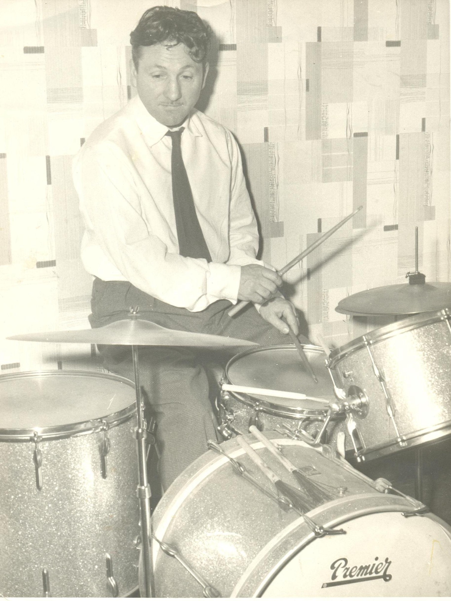
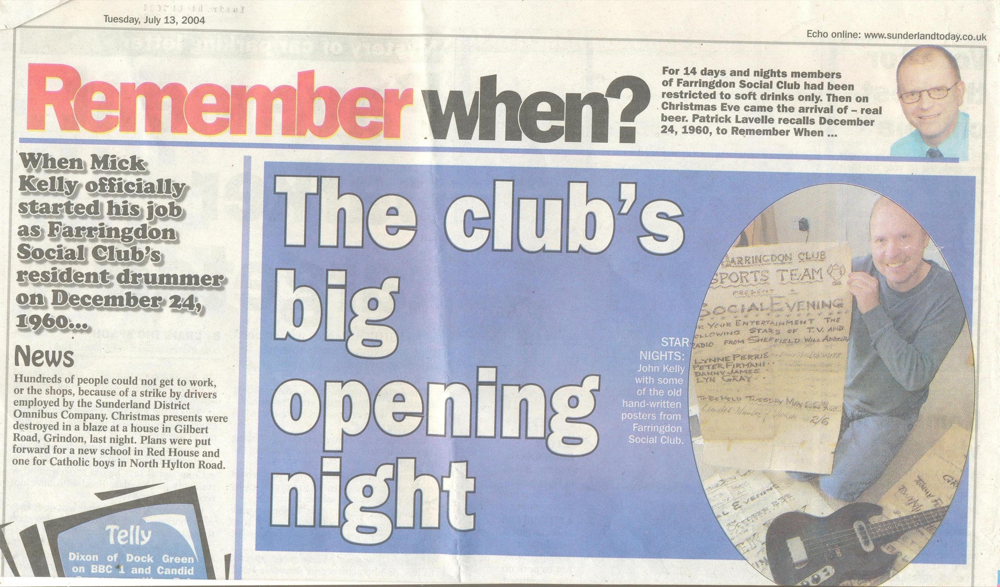
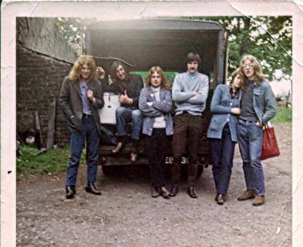
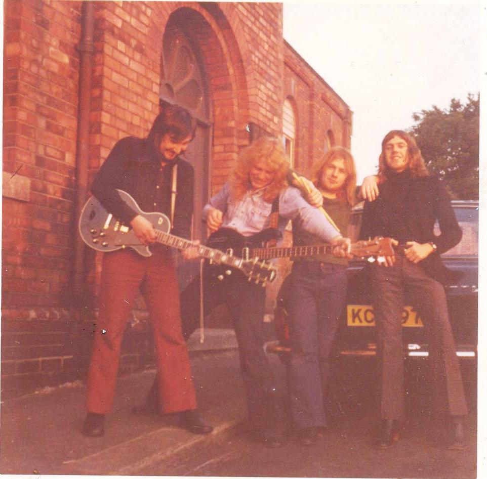
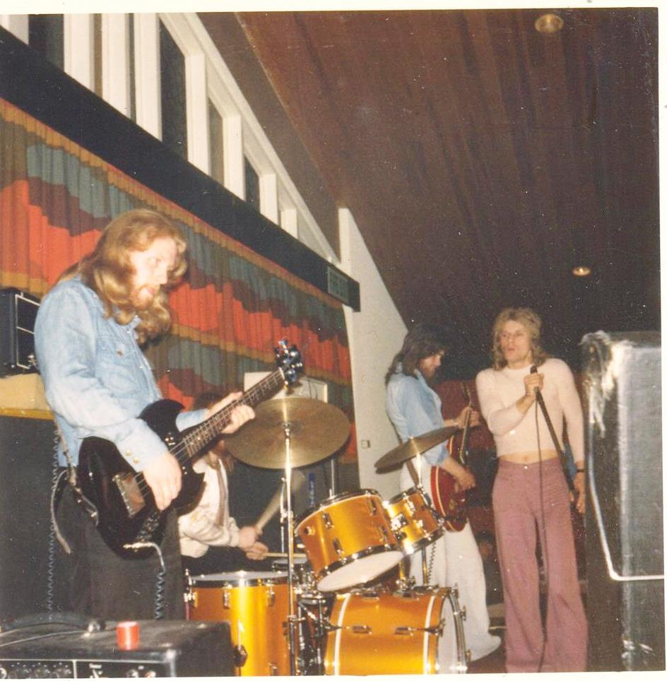
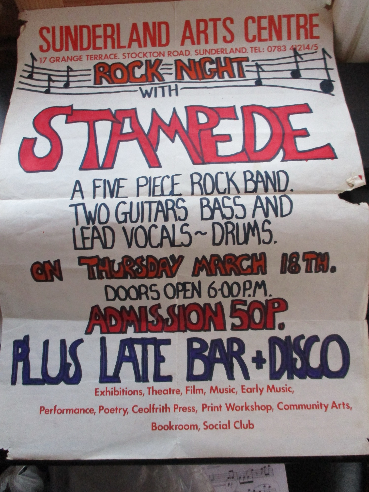
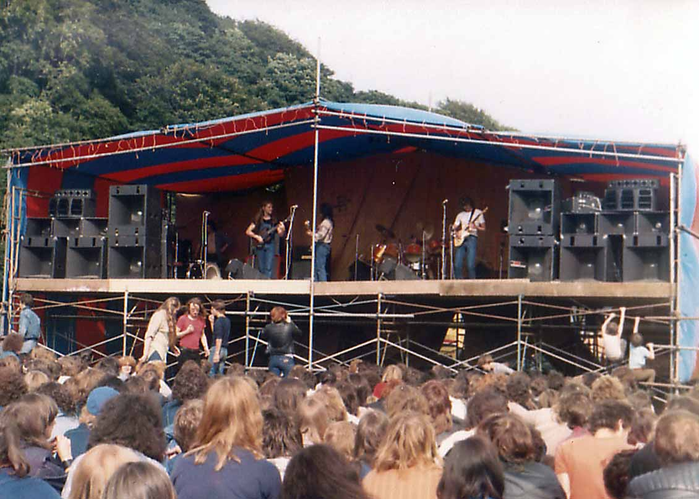
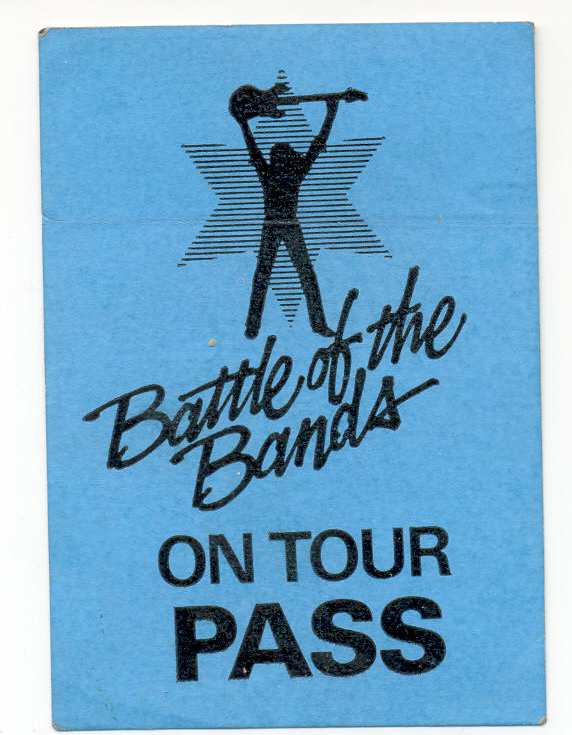

It started before I was born
The music thing probably started long before I was born, with my parents. While they both served in the R.A.F. they met when my Dad asked a friend if he knew of any music happening in the area. The friend said there was a W.A.A.F. in the officers' mess who had a New Musical Express with dates of dance bands playing. They met up and must have hit it off straight away, because six weeks later they were married.

They both shared a love of big band music — Count Basie, Benny Goodman, Glenn Miller and Joe Loss. After the war my Dad left the R.A.F. and started playing drums around Sunderland: Ryhope, Farringdon and the Catholic club in the city centre. Word soon got around, and the Farringdon club committee came knocking on our door. They asked if he had a kit of his own. He said yes — but they told him to go and choose one at Saville's music shop, so off he went and ordered a brand new Premier kit.
He never read music, so he just played by ear. When Dorothy Squires turned up and handed him some "dots" to follow, he told her he didn't read sheet music. She nearly passed out — "my reputation is at stake here!" My dad said, "Don't worry, it'll be fine." At the end of the evening she came over and said, "You're one of the best drummers I have ever played with, and I've played with quite a few." My dad said thanks and offered her a drink.

Farringdon was at the forefront of Northeast entertainment — Ricki Price, Little and Large, Gerry and the Pacemakers, Norman Vaughan, Norman Collier, Dorothy Squires, and a little-known guy by the name of Gerry Dorsey. He came to the club with no money and told my dad, "I have a single coming out next week, and if it doesn't make it I'm packing it in." My dad felt sorry for him, bought him a pint and wished him luck. Gerry Dorsey changed his name to Engelbert Humperdinck; the single, "Release Me," went to number one in 1967, and the rest is history.
Growing up with music
We always had music in our home. My sister was a huge Elvis fan, with posters all over her bedroom wall, and she bought a different record every week to play on her Dansette — The Beatles, Cliff Richard, the Mersey Sound. At ten I asked for a guitar for Christmas but found it hard to play, so my brother took hold of it and quickly picked it up, teaching himself at home watching Hold Down a Chord with John Pearce on the telly. He'd play folk — The Spinners, The Dubliners, old sea shanties — practising until his hands froze, literally, because we only had a coal fire and the ice formed on the inside of the windows.
Shortly after leaving school at fourteen, one song made me feel this time was different from any other: "San Francisco" by Scott McKenzie. Then, in my Dad's workmate's car on the way to my first job, a sound came crackling out of the analog radio that was totally different to anything I'd heard — "All Along the Watchtower" by Jimi Hendrix. "Turn that up," I said.
I'd developed a liking for the drums and started playing at home in the coal shed — yep, the coal shed — with my dad's old kit. I'd take the record player out there and play along to Free and Led Zeppelin, and as I got more confident I brought the kit into the house and played along with my brother. What a noise! When my dad had a heart attack in 1971, I stood in for him at Sunderland Catholic Club with the resident organist. It was an eye-opener, and it taught me discipline that set me up for years to come.
The Virgins
1971

The same year, I formed a band called The Virgins with my brother John and two other lads — Rob Walker from Herrington and Ken Vardy from Sunderland. Rob soon went to London to seek fame and fortune, and Ken went off to form a band with some guys he knew.
N.R.B. — Northern Rock Band

Me and our lad formed a band with Mick "Chaff" Thompson, Ev Colgan and Barry Cameron — influences from The Beatles, Free and The Nice. We called it N.R.B. After three months' rehearsal we played our first gig at the Londonderry pub in Sunderland. A full house on a Saturday night, a fee of £10 — this was the big time. The lights dimmed, the disco stopped, and we let our music flow. I came off stage absolutely sweating but really pleased. We even got a support with Fusion Orchestra and cut a demo at Multichord Studios in Sunderland. Travelling back from rehearsal, all the gear and five of us packed into the back of an Austin Maxi, shouting out of the windows — if the police had heard us we could have been arrested.
Glider
1973
In 1973 a guitarist, Les Dodd, knocked on my door and asked if I'd like to join his band, Glider. This was a working band — regular work and some extra money. I went for the audition, got the job, and the work just kept coming. Eventually the bass player left and my brother was drafted in.

Playing the clubs week in, week out in front of a live audience (notice the word "live" — some of the crowd were half dead) was a great grounding. We even got to support the Bay City Rollers at The Viking in Seahouses. Then, bands being bands, differences set in and we split up.
Stampede
1975

Around 1975 we formed a band with Cliff "Stott" Stoddart, Steve Reay and Steve Daggett — the latter went on to play with Lindisfarne, and Steve Reay became a great guitarist and teacher who even taught one of my boys at music college. Stampede played the clubs around the North East for a year or so. One night off, we went to a club in Washington to watch a band called Southbound — a reasonable band, we thought, also playing covers. Little did I know that within a few months I'd be going for an audition with them.
Southbound
1976 – early 1980s
Stampede folded in 1976 and I got the job with Southbound in early March. At the audition they asked me to play along to one of their own songs, "High Time" — a really good song. I thought, if they can write like this, I want in. I passed, and started rehearsing straight away. They were already established in the clubs, so it was work immediately, three or four gigs a week. The band was Alan Burke, Malcolm Troughton, George Lamb and Davey Giles, who'd played bass in a previous band called Agincourt.

Southbound played the working men's clubs, but the real intention was to write and perform our own songs and make a push to record. We worked the pub-rock circuit in Newcastle as the scene was developing quickly — an exciting time. One night at Coatsworth Club in Gateshead, our agent Ivan Birchall turned up unexpectedly. We didn't think we were his kind of band, but he stayed and listened, and kept giving us work.
Southbound were becoming very popular, and after taking over the residency from Last Exit and East Coast at The Gosforth Hotel, word got round to the Newcastle radio crowd. They were putting on a festival — the Bedrock Festival, summer 1977 — and the chance came to record a track for the album "All Together" at Impulse Studios in Wallsend, engineered by Mick Sweeney.
Winning the Melody Maker heat

In 1977 the Melody Maker was running a Pop/Rock competition, so we entered. We played at Dunelm House in Durham with twenty-odd other bands. Waiting for the judges to come back from their tea break, we asked the packed crowd if they'd like a song — they said yes, so we broke into "Love Is a Strange Thing." On hearing it the judges came swiftly down the stairs, and one of them jumped onto the stage and started leaping around like a man possessed. Afterwards he came over and said, "That was fantastic — but don't say anything." We left to play R.A.F. Boulmer and didn't hear the result until the next day, when my brother came to Wheatley Hill club to tell us: we'd won. Now we were off to Leeds for the area final.
Chasing the record deal
We'd been recording at Impulse with producer Steve Thompson and engineer Mick Sweeney, and we arranged three days of appointments in London — Virgin, Rocket, A&M, Decca, Island, WEA and others. Someone, we thought, must take a liking to us. In one office Donna Summer's "I Feel Love" was playing; in another, "Watching the Detectives" by Elvis Costello. This doesn't sound like us, I thought — we had an AOR sound. After days of stumbling around London we headed home hoping someone might pick up on what we'd left them.

The Battle of the Bands came round and we set off to Leeds feeling we were in with a real chance. But the band before us pulled out, we were rushed on stage, and we couldn't use our own sound man Paul Robinson — the desk engineer ruined our sound with feedback. We came third. One record company told us, "You're two years out." I must have had blinkers on, because we were right in the middle of a musical revolution — punk and new wave sweeping the country — and our music was becoming old hat. But AOR was still going strong, so we kept going.
We added a vocalist, Bill Sharpe from Sidekick, and a lighting man, Kev Cain from South Shields, who has since become a professional lighting engineer touring with well-known artists. The six-piece didn't last; when Malcolm Troughton and Bill Sharpe left, we auditioned over thirty singers before deciding the vocals would be handled by George Lamb and Alan Burke. The band felt a real resurgence — new songs tailored to their voices, more compact and focused. Work increased. New songs came thick and fast: "Keep on Winding," "Pretty Girl," "Don't Deny Me Your Love." Those tracks would be heard again 38 years later.
The night Reg Presley borrowed the gear
Around 1979–80 my brother, who worked at Sunderland Poly, phoned to ask if Southbound were gigging that night. I said the gig had been cancelled. He said he had Reg Presley from the Troggs next to him — their truck had broken down, could we help out? I was gobsmacked to be speaking to Reg. I phoned Davey Giles, who came to help, and rang back to say we'd be over in 45 minutes. Reg was delighted — "you've saved the night," in his best West Country accent. The Troggs went down a storm, hit after hit. What got me most was how friendly Reg and the whole band were — and how they made such a fantastic sound with just guitar, bass and drums. What a night.
One more Battle

We recruited a singer, Ned Archbold — "Pud" — from local band Big Picture, and had another go at Battle of the Bands, this time at The Mayfair in Newcastle. To our amazement we won, and went on to the semi-final at UMIST in Manchester. The place was buzzing, and we were amazed to see a crowd of Gosforth Hotel regulars who'd hired coaches to come and support us. We gave it everything but came fourth — though we did land a track on the RCA compilation of bands from the semi-final. We recorded it at Wopalong Studios in Luton in January 1982; the engineer, it turned out, wasn't even a qualified engineer — he was an actor who'd appeared in Bergerac. Hmm.
We kept pushing our songs, playing support to Cado Belle (featuring Maggie Reilly), Albertos y Lost Trios Paranoias, Babe Ruth, Tygers of Pan Tang, Raven and many more. The replies from record companies kept coming: "we have to pass on this," "close but no cigar," "our label has its full quota." Frustrating. So we just leapt on working as much as we could — and we did play, all over the North East and beyond.
In memory
Alan Burke · Ned (Richard) Archbold
Sadly we lost two members of Southbound in 2021 — Alan Burke, our joint lead guitarist, singer and songwriter, on 30th April, and Ned Archbold on 21st May. At least Alan got to hear the songs he co-wrote with George Lamb, released at last.